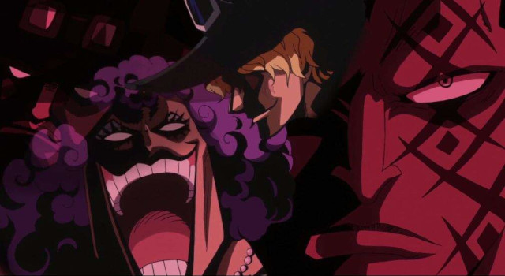
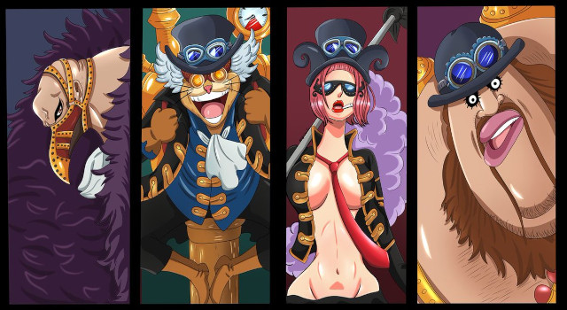

História
O principal objetivo do Exército Revolucionário é lutar contra o Governo Mundial sobre o mundo. Embora seus motivos completos não sejam conhecidos, seu líder Monkey D. Dragon uma vez demonstrou desdém pelo fato de os nobres maltratarem os que governaram. Os revolucionários também ajudaram a libertar escravos de Tequila Wolf.
A maioria dos esforços do Exército Revolucionário está focado em libertar ilhas individuais dos governos locais que estão sob o Governo Mundial. Essas pequenas revoluções se tornam mais fáceis se o Governo Mundial for jogado no caos, pois o Exército Revolucionário conseguiu libertar várias ilhas quando o governo foi jogado no caos após a derrota do Shichibukai Donquixote Doflamingo.
Por ser uma milícia independente, outro objetivo do Exército Revolucionário é o armazenamento de armas para fortalecer sua força militar. Eles mantiveram o controle sobre a atividade do submundo de Doflamingo com o único propósito de ganhar as armas que ele trocou, e quando Doflamingo foi preso, eles pegaram todas as armas que restaram em Dressrosa.
Qualquer um que se torne um revolucionário é declarado uma ameaça e torna-se procurado pelo Governo Mundial, porque como o mundo está estabilizado através dos Três Grandes Poderes, os Revolucionários são uma ameaça a esse equilíbrio crítico. O Rei Thalassa Lucas afirmou durante o Levely que seus ideais e ações eram perigosos. As pessoas que se juntam ao Exército Revolucionário são consideradas ameaças notórias ao governo, especialmente aos membros do alto escalão. O líder Dragon é conhecido como "O Homem Mais Procurado do Mundo", o segundo em comando Sabo enfrentou um Almirante da Marinha em combate direto., e os membros Emporio Ivankov e Inazuma foram presos no Nível 5 de Impel Down.
Ao saber que Luffy é o filho do líder Dragon, os marinheiros fizeram de Luffy uma grande prioridade para ser eliminado devido a essa herança.